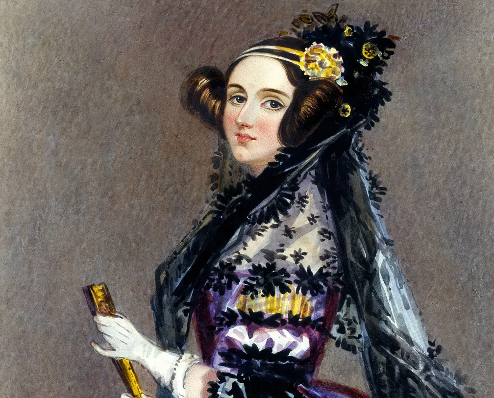

Mulheres na Tecnologia

Ada Lovelace
Ada Lovelace é conhecida como a primeira programadora de computadores do mundo por seu trabalho no primeiro algoritmo destinado a ser processado por uma máquina.

Grace Hopper
Grace Hopper foi uma pioneira da ciência da computação, desenvolvendo o primeiro compilador para uma linguagem de programação e popularizando a ideia de linguagens de programação independentes de máquina.
Roberta Williams
Roberta Williams é uma das fundadoras da Sierra On-Line e uma das designers de jogos mais influentes na indústria de jogos de aventura, conhecida por seu trabalho na série King's Quest.

Carol Shaw
Carol Shaw é considerada a primeira mulher desenvolvedora de videogames, conhecida por seu trabalho no jogo River Raid para o Atari 2600.